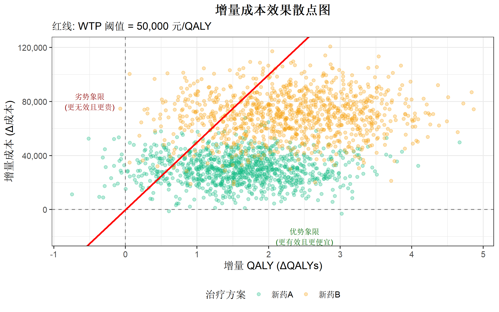
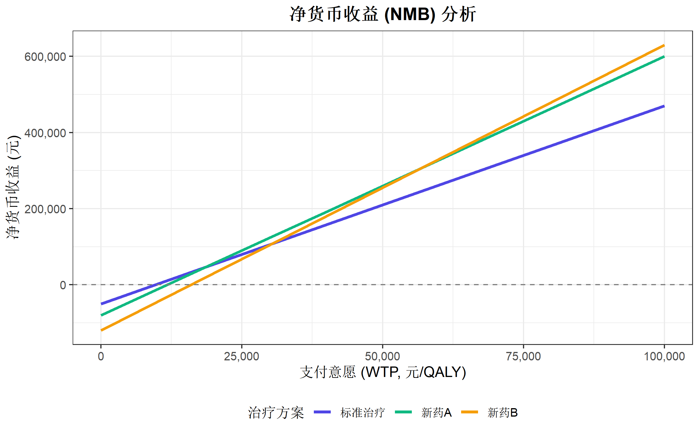

# 安装核心包
install.packages("ggplot2")
install.packages("dplyr")
install.packages("scales")R语言卫生经济学分析
R语言方法
卫生经济学
成本效果分析
什么是卫生经济学评价
卫生经济学评价（Health Economic Evaluation）是一种系统性比较不同医疗干预措施的成本和健康结果的分析方法，帮助决策者在有限资源下做出最优选择。
主要评价方法
| 方法 | 英文缩写 | 结果指标 | 适用场景 |
|---|---|---|---|
| 成本效果分析 | CEA | 自然单位（如生命年） | 单一疾病比较 |
| 成本效用分析 | CUA | 质量调整生命年（QALY） | 跨疾病比较 |
| 成本效益分析 | CBA | 货币单位 | 健康与非健康项目比较 |
| 成本最小化分析 | CMA | 无（假设效果相同） | 效果相同的干预比较 |
核心概念
- ICER（增量成本效果比）：每多获得一个健康单位所需的额外成本
- QALY（质量调整生命年）：综合考虑生存时间和生活质量
- WTP（支付意愿）：社会愿意为一个 QALY 支付的最高金额
- 贴现率：将未来成本/效果折算为现值的比率（通常 3-5%）
R包介绍
卫生经济学分析常用的 R 包：
| R包 | 功能 | 链接 |
|---|---|---|
hesim |
健康状态转换模型、决策分析 | CRAN |
heemod |
马尔可夫模型构建 | CRAN |
BCEA |
贝叶斯成本效果分析 | CRAN |
dampack |
决策分析模型参数化 | CRAN |
survHE |
生存分析外推 | CRAN |
本教程使用基础 R 和 ggplot2 从零实现卫生经济学核心分析，无需安装专业包。
R包安装
library(ggplot2)
library(dplyr)
library(scales)成本效果分析基础
模拟数据准备
假设我们比较三种治疗方案：标准治疗、新药 A、新药 B。
# 创建策略数据
strategies <- c("标准治疗", "新药A", "新药B")
# 成本数据（单位：元）
costs <- c(50000, 80000, 120000)
# 效果数据（QALY）
qalys <- c(5.2, 6.8, 7.5)
# 创建数据框
cea_data <- data.frame(
Strategy = strategies,
Cost = costs,
QALY = qalys
)
cea_data Strategy Cost QALY
1 标准治疗 50000 5.2
2 新药A 80000 6.8
3 新药B 120000 7.5成本效果平面图
成本效果平面图是卫生经济学最基础的可视化，横轴为效果（QALY），纵轴为成本。
# 基础成本效果平面图
ggplot(cea_data, aes(x = QALY, y = Cost, color = Strategy)) +
geom_point(size = 5) +
geom_text(aes(label = Strategy), vjust = -1, size = 4) +
scale_y_continuous(labels = comma_format()) +
scale_color_manual(values = c("#4f46e5", "#10b981", "#f59e0b")) +
labs(
title = "成本效果平面图",
x = "质量调整生命年 (QALY)",
y = "成本 (元)",
color = "治疗方案"
) +
theme_bw(base_size = 12) +
theme(
legend.position = "bottom",
plot.title = element_text(hjust = 0.5, face = "bold")
) +
expand_limits(y = c(0, 150000))
计算增量成本效果比 (ICER)
ICER 公式：\[ICER = \frac{\Delta Cost}{\Delta QALY} = \frac{Cost_B - Cost_A}{QALY_B - QALY_A}\]
# 以标准治疗为参照计算 ICER
reference <- cea_data[1, ]
icer_results <- cea_data |>
mutate(
Delta_Cost = Cost - reference$Cost,
Delta_QALY = QALY - reference$QALY,
ICER = ifelse(Delta_QALY > 0, Delta_Cost / Delta_QALY, NA)
)
icer_results Strategy Cost QALY Delta_Cost Delta_QALY ICER
1 标准治疗 50000 5.2 0 0.0 NA
2 新药A 80000 6.8 30000 1.6 18750.00
3 新药B 120000 7.5 70000 2.3 30434.78成本效果可接受曲线 (CEAC)
概率敏感性分析数据
模拟 1000 次蒙特卡洛模拟的结果：
set.seed(42)
n_sim <- 1000
# 模拟成本和效果的不确定性
sim_data <- data.frame(
simulation = rep(1:n_sim, 3),
Strategy = rep(c("标准治疗", "新药A", "新药B"), each = n_sim),
Cost = c(
rnorm(n_sim, 50000, 5000),
rnorm(n_sim, 80000, 10000),
rnorm(n_sim, 120000, 15000)
),
QALY = c(
rnorm(n_sim, 5.2, 0.5),
rnorm(n_sim, 6.8, 0.6),
rnorm(n_sim, 7.5, 0.7)
)
)
head(sim_data) simulation Strategy Cost QALY
1 1 标准治疗 56854.79 4.857169
2 2 标准治疗 47176.51 4.803643
3 3 标准治疗 51815.64 4.996498
4 4 标准治疗 53164.31 4.625665
5 5 标准治疗 52021.34 5.757880
6 6 标准治疗 49469.38 4.760272增量成本效果散点图
# 计算相对于标准治疗的增量
ref_data <- sim_data |>
filter(Strategy == "标准治疗") |>
select(simulation, ref_Cost = Cost, ref_QALY = QALY)
incremental_data <- sim_data |>
filter(Strategy != "标准治疗") |>
left_join(ref_data, by = "simulation") |>
mutate(
Delta_Cost = Cost - ref_Cost,
Delta_QALY = QALY - ref_QALY
)
# 绘制增量成本效果散点图
ggplot(incremental_data, aes(x = Delta_QALY, y = Delta_Cost, color = Strategy)) +
geom_point(alpha = 0.3, size = 1.5) +
geom_hline(yintercept = 0, linetype = "dashed", color = "gray50") +
geom_vline(xintercept = 0, linetype = "dashed", color = "gray50") +
# 添加 WTP 阈值线（假设 50000 元/QALY）
geom_abline(intercept = 0, slope = 50000, linetype = "solid", color = "red", linewidth = 1) +
scale_y_continuous(labels = comma_format()) +
scale_color_manual(values = c("#10b981", "#f59e0b")) +
labs(
title = "增量成本效果散点图",
subtitle = "红线: WTP 阈值 = 50,000 元/QALY",
x = "增量 QALY (ΔQALYs)",
y = "增量成本 (Δ成本)",
color = "治疗方案"
) +
theme_bw(base_size = 12) +
theme(
legend.position = "bottom",
plot.title = element_text(hjust = 0.5, face = "bold")
) +
annotate("text", x = 2.5, y = -20000, label = "优势象限\n(更有效且更便宜)",
color = "darkgreen", size = 3) +
annotate("text", x = -0.5, y = 80000, label = "劣势象限\n(更无效且更贵)",
color = "darkred", size = 3)
成本效果可接受曲线
CEAC 展示在不同 WTP 阈值下，每种策略具有成本效果的概率。
# 定义 WTP 范围
wtp_range <- seq(0, 150000, by = 5000)
# 计算每个 WTP 下各策略的可接受概率
calculate_ceac <- function(sim_data, wtp_range) {
strategies <- unique(sim_data$Strategy)
results <- data.frame()
for (wtp in wtp_range) {
# 计算每次模拟的净货币收益 (NMB)
nmb_data <- sim_data |>
mutate(NMB = wtp * QALY - Cost)
# 找出每次模拟中 NMB 最高的策略
best_strategy <- nmb_data |>
group_by(simulation) |>
slice_max(NMB, n = 1) |>
ungroup()
# 计算每种策略的最优概率
prob_best <- best_strategy |>
count(Strategy) |>
mutate(Probability = n / n_sim)
# 补充没有出现的策略
for (s in strategies) {
if (!s %in% prob_best$Strategy) {
prob_best <- bind_rows(prob_best,
data.frame(Strategy = s, n = 0, Probability = 0))
}
}
prob_best$WTP <- wtp
results <- bind_rows(results, prob_best)
}
results
}
ceac_data <- calculate_ceac(sim_data, wtp_range)
# 绘制 CEAC
ggplot(ceac_data, aes(x = WTP, y = Probability, color = Strategy)) +
geom_line(linewidth = 1.2) +
geom_vline(xintercept = 50000, linetype = "dashed", color = "gray50") +
scale_x_continuous(labels = comma_format()) +
scale_y_continuous(limits = c(0, 1), labels = percent_format()) +
scale_color_manual(values = c("#4f46e5", "#10b981", "#f59e0b")) +
labs(
title = "成本效果可接受曲线 (CEAC)",
x = "支付意愿 (WTP, 元/QALY)",
y = "成本效果的概率",
color = "治疗方案"
) +
theme_bw(base_size = 12) +
theme(
legend.position = "bottom",
plot.title = element_text(hjust = 0.5, face = "bold")
) +
annotate("text", x = 55000, y = 0.95, label = "WTP = 50,000",
hjust = 0, color = "gray30", size = 3.5)
决策树模型
简单决策树示例
模拟一个简单的治疗决策场景：
# 决策树参数
params <- list(
# 治疗成功率
p_success_standard = 0.60,
p_success_new = 0.80,
# 成本
c_standard = 10000,
c_new = 25000,
c_success = 5000, # 成功后维护成本
c_failure = 50000, # 失败后补救成本
# 效用
u_success = 0.9,
u_failure = 0.5,
# 时间范围（年）
time_horizon = 5
)
# 计算期望成本和效果
calculate_expected <- function(p_success, c_treatment, params) {
# 期望成本
expected_cost <- c_treatment +
p_success * params$c_success +
(1 - p_success) * params$c_failure
# 期望 QALY
expected_qaly <- params$time_horizon * (
p_success * params$u_success +
(1 - p_success) * params$u_failure
)
list(cost = expected_cost, qaly = expected_qaly)
}
# 标准治疗
standard <- calculate_expected(params$p_success_standard, params$c_standard, params)
# 新治疗
new_treatment <- calculate_expected(params$p_success_new, params$c_new, params)
# 结果汇总
decision_tree_results <- data.frame(
Strategy = c("标准治疗", "新治疗"),
Expected_Cost = c(standard$cost, new_treatment$cost),
Expected_QALY = c(standard$qaly, new_treatment$qaly)
) |>
mutate(
ICER = c(NA, (Expected_Cost[2] - Expected_Cost[1]) /
(Expected_QALY[2] - Expected_QALY[1]))
)
decision_tree_results Strategy Expected_Cost Expected_QALY ICER
1 标准治疗 33000 3.7 NA
2 新治疗 39000 4.1 15000决策树可视化
# 创建决策树数据
tree_data <- data.frame(
x = c(0, 1, 1, 2, 2, 2, 2),
y = c(3, 4.5, 1.5, 5.5, 3.5, 2.5, 0.5),
label = c(
"决策节点",
"标准治疗",
"新治疗",
paste0("成功 (", params$p_success_standard * 100, "%)"),
paste0("失败 (", (1 - params$p_success_standard) * 100, "%)"),
paste0("成功 (", params$p_success_new * 100, "%)"),
paste0("失败 (", (1 - params$p_success_new) * 100, "%)")
),
node_type = c("decision", "chance", "chance", "outcome", "outcome", "outcome", "outcome")
)
# 连接线数据
edges <- data.frame(
x = c(0, 0, 1, 1, 1, 1),
xend = c(1, 1, 2, 2, 2, 2),
y = c(3, 3, 4.5, 4.5, 1.5, 1.5),
yend = c(4.5, 1.5, 5.5, 3.5, 2.5, 0.5)
)
ggplot() +
# 绘制连接线
geom_segment(data = edges,
aes(x = x, y = y, xend = xend, yend = yend),
color = "gray50", linewidth = 0.8) +
# 决策节点（方形）
geom_point(data = tree_data |> filter(node_type == "decision"),
aes(x = x, y = y), shape = 15, size = 8, color = "#4f46e5") +
# 机会节点（圆形）
geom_point(data = tree_data |> filter(node_type == "chance"),
aes(x = x, y = y), shape = 16, size = 6, color = "#10b981") +
# 结果节点（三角形）
geom_point(data = tree_data |> filter(node_type == "outcome"),
aes(x = x, y = y), shape = 17, size = 5, color = "#f59e0b") +
# 标签
geom_text(data = tree_data,
aes(x = x, y = y, label = label),
hjust = -0.1, vjust = 0.5, size = 3.5) +
# 添加结果数值
annotate("text", x = 2.8, y = 5.5,
label = paste0("成本: ", comma(params$c_standard + params$c_success),
"\nQALY: ", params$time_horizon * params$u_success),
hjust = 0, size = 3, color = "gray30") +
annotate("text", x = 2.8, y = 3.5,
label = paste0("成本: ", comma(params$c_standard + params$c_failure),
"\nQALY: ", params$time_horizon * params$u_failure),
hjust = 0, size = 3, color = "gray30") +
annotate("text", x = 2.8, y = 2.5,
label = paste0("成本: ", comma(params$c_new + params$c_success),
"\nQALY: ", params$time_horizon * params$u_success),
hjust = 0, size = 3, color = "gray30") +
annotate("text", x = 2.8, y = 0.5,
label = paste0("成本: ", comma(params$c_new + params$c_failure),
"\nQALY: ", params$time_horizon * params$u_failure),
hjust = 0, size = 3, color = "gray30") +
labs(title = "治疗决策树模型") +
theme_void() +
theme(plot.title = element_text(hjust = 0.5, face = "bold", size = 14)) +
xlim(-0.5, 4) +
ylim(-0.5, 6.5)
马尔可夫模型
模型概述
马尔可夫模型是卫生经济学中最常用的建模方法，用于模拟疾病进展和干预效果。
# 定义模型参数
markov_params <- list(
# 状态名称
states = c("健康", "疾病", "死亡"),
n_states = 3,
# 周期数（年）
n_cycles = 20,
# 转移概率（标准治疗）
p_healthy_disease_std = 0.10,
p_disease_death_std = 0.15,
# 转移概率（新治疗）
p_healthy_disease_new = 0.05,
p_disease_death_new = 0.10,
# 成本（每周期）
c_healthy = 1000,
c_disease = 8000,
c_death = 0,
c_new_treatment = 5000, # 新治疗额外成本
# 效用
u_healthy = 1.0,
u_disease = 0.6,
u_death = 0,
# 贴现率
discount_rate = 0.03
)构建转移概率矩阵
# 标准治疗转移矩阵
trans_matrix_std <- matrix(c(
0.89, 0.10, 0.01, # 从健康状态
0.00, 0.84, 0.16, # 从疾病状态（含背景死亡）
0.00, 0.00, 1.00 # 从死亡状态
), nrow = 3, byrow = TRUE)
rownames(trans_matrix_std) <- colnames(trans_matrix_std) <- markov_params$states
# 新治疗转移矩阵
trans_matrix_new <- matrix(c(
0.94, 0.05, 0.01, # 从健康状态
0.00, 0.89, 0.11, # 从疾病状态
0.00, 0.00, 1.00 # 从死亡状态
), nrow = 3, byrow = TRUE)
rownames(trans_matrix_new) <- colnames(trans_matrix_new) <- markov_params$states
trans_matrix_std 健康 疾病 死亡
健康 0.89 0.10 0.01
疾病 0.00 0.84 0.16
死亡 0.00 0.00 1.00运行马尔可夫模拟
# 马尔可夫模拟函数
run_markov <- function(trans_matrix, params, treatment_cost = 0) {
n_cycles <- params$n_cycles
states <- params$states
# 初始状态分布（100% 健康）
state_dist <- matrix(0, nrow = n_cycles + 1, ncol = 3)
colnames(state_dist) <- states
state_dist[1, ] <- c(1, 0, 0)
# 成本和效用向量
costs <- c(params$c_healthy, params$c_disease, params$c_death)
utilities <- c(params$u_healthy, params$u_disease, params$u_death)
# 贴现因子
discount_factors <- (1 / (1 + params$discount_rate)) ^ (0:n_cycles)
# 模拟各周期
for (i in 1:n_cycles) {
state_dist[i + 1, ] <- state_dist[i, ] %*% trans_matrix
}
# 计算成本和 QALY
cycle_costs <- state_dist %*% costs + treatment_cost
cycle_qalys <- state_dist %*% utilities
# 贴现后总计
total_cost <- sum(cycle_costs * discount_factors)
total_qaly <- sum(cycle_qalys * discount_factors)
list(
state_dist = state_dist,
total_cost = total_cost,
total_qaly = total_qaly,
cycle_costs = cycle_costs,
cycle_qalys = cycle_qalys
)
}
# 运行两种治疗方案
results_std <- run_markov(trans_matrix_std, markov_params, treatment_cost = 0)
results_new <- run_markov(trans_matrix_new, markov_params, treatment_cost = markov_params$c_new_treatment)状态分布可视化
# 整理状态分布数据
prepare_state_data <- function(results, treatment_name) {
data.frame(
Cycle = rep(0:markov_params$n_cycles, 3),
State = rep(markov_params$states, each = markov_params$n_cycles + 1),
Proportion = as.vector(results$state_dist),
Treatment = treatment_name
)
}
state_data <- bind_rows(
prepare_state_data(results_std, "标准治疗"),
prepare_state_data(results_new, "新治疗")
)
# 绘制状态转移图
ggplot(state_data, aes(x = Cycle, y = Proportion, fill = State)) +
geom_area(alpha = 0.8) +
facet_wrap(~Treatment) +
scale_fill_manual(values = c("#10b981", "#f59e0b", "#6b7280")) +
scale_y_continuous(labels = percent_format()) +
labs(
title = "马尔可夫模型状态分布",
x = "周期（年）",
y = "人群比例",
fill = "健康状态"
) +
theme_bw(base_size = 12) +
theme(
legend.position = "bottom",
plot.title = element_text(hjust = 0.5, face = "bold"),
strip.background = element_rect(fill = "#4f46e5"),
strip.text = element_text(color = "white", face = "bold")
)
马尔可夫模型结果汇总
# 汇总结果
markov_summary <- data.frame(
Strategy = c("标准治疗", "新治疗"),
Total_Cost = c(results_std$total_cost, results_new$total_cost),
Total_QALY = c(results_std$total_qaly, results_new$total_qaly)
) |>
mutate(
Delta_Cost = Total_Cost - Total_Cost[1],
Delta_QALY = Total_QALY - Total_QALY[1],
ICER = ifelse(Delta_QALY > 0, Delta_Cost / Delta_QALY, NA)
)
markov_summary Strategy Total_Cost Total_QALY Delta_Cost Delta_QALY ICER
1 标准治疗 33714.77 9.017402 0.00 0.000000 NA
2 新治疗 111169.34 11.417944 77454.57 2.400542 32265.45单因素敏感性分析
龙卷风图
龙卷风图展示各参数对结果的影响程度。
# 定义参数范围
sensitivity_params <- data.frame(
Parameter = c(
"疾病转移概率 (标准)",
"死亡转移概率 (标准)",
"疾病转移概率 (新)",
"死亡转移概率 (新)",
"疾病状态成本",
"新治疗成本",
"贴现率"
),
Base = c(0.10, 0.15, 0.05, 0.10, 8000, 5000, 0.03),
Low = c(0.05, 0.10, 0.03, 0.05, 5000, 3000, 0.00),
High = c(0.15, 0.20, 0.08, 0.15, 12000, 8000, 0.05)
)
# 模拟敏感性分析结果（简化演示）
set.seed(123)
tornado_data <- sensitivity_params |>
mutate(
ICER_low = runif(n(), 15000, 35000),
ICER_high = runif(n(), 35000, 55000),
ICER_base = 32000
) |>
arrange(desc(abs(ICER_high - ICER_low)))
# 绘制龙卷风图
ggplot(tornado_data) +
geom_segment(aes(y = reorder(Parameter, abs(ICER_high - ICER_low)),
yend = reorder(Parameter, abs(ICER_high - ICER_low)),
x = ICER_low, xend = ICER_high),
linewidth = 8, color = "#4f46e5", alpha = 0.7) +
geom_vline(xintercept = tornado_data$ICER_base[1],
linetype = "dashed", color = "red", linewidth = 1) +
scale_x_continuous(labels = comma_format()) +
labs(
title = "龙卷风图 - 单因素敏感性分析",
subtitle = "红色虚线: 基准 ICER",
x = "ICER (元/QALY)",
y = "参数"
) +
theme_bw(base_size = 12) +
theme(
plot.title = element_text(hjust = 0.5, face = "bold"),
panel.grid.major.y = element_blank()
)
成本效果前沿
效率前沿线
效率前沿展示在给定成本下可达到的最大效果。
# 创建多策略数据
frontier_data <- data.frame(
Strategy = c("无干预", "方案A", "方案B", "方案C", "方案D", "方案E"),
Cost = c(10000, 30000, 45000, 60000, 90000, 100000),
QALY = c(4.0, 5.5, 6.2, 6.8, 7.8, 7.9)
)
# 识别效率前沿上的策略（简化算法）
frontier_data <- frontier_data |>
arrange(Cost) |>
mutate(
on_frontier = c(TRUE, TRUE, TRUE, FALSE, TRUE, FALSE) # 手动标记
)
ggplot(frontier_data, aes(x = QALY, y = Cost)) +
# 绘制效率前沿线
geom_line(data = frontier_data |> filter(on_frontier),
color = "#4f46e5", linewidth = 1.2) +
# 所有点
geom_point(aes(color = on_frontier), size = 5) +
# 标签
geom_text(aes(label = Strategy), vjust = -1, size = 3.5) +
scale_color_manual(values = c("TRUE" = "#10b981", "FALSE" = "#ef4444"),
labels = c("TRUE" = "效率前沿", "FALSE" = "被支配")) +
scale_y_continuous(labels = comma_format()) +
labs(
title = "成本效果效率前沿",
x = "质量调整生命年 (QALY)",
y = "成本 (元)",
color = "策略状态"
) +
theme_bw(base_size = 12) +
theme(
legend.position = "bottom",
plot.title = element_text(hjust = 0.5, face = "bold")
)
净货币收益分析
NMB 计算与可视化
净货币收益（Net Monetary Benefit）：\[NMB = WTP \times \Delta QALY - \Delta Cost\]
# 计算不同 WTP 下的 NMB
wtp_values <- seq(0, 100000, by = 10000)
nmb_data <- expand.grid(
WTP = wtp_values,
Strategy = c("标准治疗", "新药A", "新药B")
) |>
left_join(cea_data, by = "Strategy") |>
mutate(
NMB = WTP * QALY - Cost
)
ggplot(nmb_data, aes(x = WTP, y = NMB, color = Strategy)) +
geom_line(linewidth = 1.2) +
geom_hline(yintercept = 0, linetype = "dashed", color = "gray50") +
scale_x_continuous(labels = comma_format()) +
scale_y_continuous(labels = comma_format()) +
scale_color_manual(values = c("#4f46e5", "#10b981", "#f59e0b")) +
labs(
title = "净货币收益 (NMB) 分析",
x = "支付意愿 (WTP, 元/QALY)",
y = "净货币收益 (元)",
color = "治疗方案"
) +
theme_bw(base_size = 12) +
theme(
legend.position = "bottom",
plot.title = element_text(hjust = 0.5, face = "bold")
)
实用函数封装
ICER 计算函数
#' 计算 ICER
#' @param cost_new 新治疗成本
#' @param cost_ref 参照治疗成本
#' @param effect_new 新治疗效果
#' @param effect_ref 参照治疗效果
#' @return ICER 值
calculate_icer <- function(cost_new, cost_ref, effect_new, effect_ref) {
delta_cost <- cost_new - cost_ref
delta_effect <- effect_new - effect_ref
if (delta_effect <= 0) {
warning("增量效果 <= 0，新治疗可能被支配")
return(NA)
}
icer <- delta_cost / delta_effect
cat("增量成本:", comma(delta_cost), "元\n")
cat("增量效果:", round(delta_effect, 3), "QALY\n")
cat("ICER:", comma(round(icer, 0)), "元/QALY\n")
invisible(icer)
}
# 示例
calculate_icer(
cost_new = 80000, cost_ref = 50000,
effect_new = 6.8, effect_ref = 5.2
)增量成本: 30,000 元
增量效果: 1.6 QALY
ICER: 18,750 元/QALY总结
卫生经济学评价是医疗决策的重要工具，R 语言提供了强大的分析能力：
| 分析类型 | 关键指标 | 推荐方法 |
|---|---|---|
| 成本效果分析 | ICER | 增量分析、效率前沿 |
| 不确定性分析 | CEAC、龙卷风图 | 概率敏感性分析 |
| 疾病建模 | 状态分布、生存曲线 | 马尔可夫模型、决策树 |
| 决策支持 | NMB | 净货币收益分析 |
推荐学习资源
- DARTH 工作组 - 决策分析建模教程
- ISPOR 指南 - 卫生经济学方法学标准
- R for Health Technology Assessment - R 语言 HTA 资源
常用 WTP 阈值参考
| 国家/地区 | WTP 阈值（每 QALY） |
|---|---|
| 中国 | 1-3 倍人均 GDP（约 7-21 万元） |
| 英国 (NICE) | £20,000-30,000 |
| 美国 | $50,000-150,000 |
| WHO 推荐 | 1-3 倍人均 GDP |